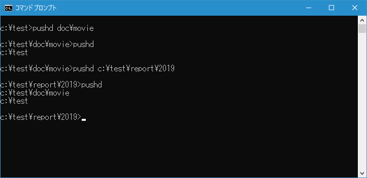

カレントディレクトリをスタックに記憶してから別のディレクトリへ変更(PUSHD, POPD)
カレントディレクトリをスタックに記憶してから別のディレクトリへ変更することができる PUSHD コマンド、そしてスタックに記憶したディレクトリを取り出してカレントディレクトリを変更することができる POPD コマンドの使い方について解説します。
目次
PUSHDコマンドとPOPDコマンドの使い方
PUSHD コマンドを実行すると現在のディレクトリをスタックに記憶した上でカレントディレクトリを変更することができます。書式は次の通りです。
PUSHD [パス | ..]
PUSHD コマンドの引数として変更したいパスを指定します。パスは相対パスでも絶対パスでも指定できます。
スタックには複数のディレクトリを記憶させることができます。引数なしで PUSHD コマンドを実行するとスタックに記憶されてるディレクトリの一覧を表示します。
PUSHD
POPD コマンドを実行するとスタックに記憶されているディレクトリを取り出しカレントディレクトリを変更することができます。書式は次の通りです。
POPD
POPD コマンドを実行してスタックからディレクトリを取り出すと、スタックに記憶されていたディレクトリは削除されます。
PUSHD コマンドを使って別のディレクトリに移動したあと、POPD コマンドを使って元のディレクトリへ戻るといった使い方となります。
現在のディレクトリを記憶して別のディレクトリへ移動する
例えばカレントディレクトリが c:\test の時にカレントディレクトリをスタックに記憶しつつ c:\test\doc ディレクトリへ変更するには次のように実行します。
pushd doc
カレントディレクトリが新しいディレクトリへ変更しつつ、元のディレクトリはスタックに記憶されました。
記憶しているディレクトリへカレントディレクトリを変更する
スタックに記憶しているディレクトリへカレントディレクトリを変更するには次のように実行します。
popd
スタックに記憶されていた変更前のディレクトリにカレントディレクトリが変更されました。
PUSHD コマンドと POPD コマンドはこのように組み合わせて使用し、現在のディレクトリから一時的に別のディレクトリへ移動して作業したあとに元のディレクトリに戻りたい場合に使用します。
複数のディレクトリをスタックに記憶する
PUSHD コマンドを複数回実行すると、実行した時点でのカレントディレクトリを順にスタックに記憶していきます。例えばカレントディレクトリが c:\test の時にカレントディレクトリをスタックに記憶しつつ c:\test\doc\movie ディレクトリへ変更するには次のように実行します。
pushd doc
現在スタックに記憶されているディレクトリを確認するには PUSHD コマンドを引数なしで次のように実行します。
pushd
現在1つのディレクトリがスタックに記憶されていました。
ここで再度 PUSHD コマンドを実行し、カレントディレクトリをスタックに記憶しつつ c:\test\report\2019 ディレクトリへ変更してみます。
pushd c:\test\report\2019
再度スタックに記憶されているディレクトリを確認します。
pushd

現在2つのディレクトリがスタックに記憶されていました。
それでは POPD コマンドを使ってスタックからディレクトリを取り出しカレントディレクトリを変更します。スタックに複数のディレクトリが記憶されている場合は、一番新しく記憶されたものから順に取り出します。
popd
スタックに記憶されていた一番新しいディレクトリへカレントディレクトリが変更されました。
再度スタックに記憶されているディレクトリを確認します。
pushd
POPD コマンドによって取り出されたディレクトリは削除されるため、現在スタックに記憶されているディレクトリは1つになりました。
もう一度 POPD コマンドを使ってスタックからディレクトリを取り出しカレントディレクトリを変更します。
popd
一番最初のディレクトリに戻ることができました。
このように PUSHD コマンドを続けて実行することで、複数のディレクトリをスタックに記憶させることができます。POPD コマンドを実行すると新しくスタックに追加されたディレクトリ情報から順に取り出し、一度取り出したディレクトリは自動で削除されます。
-- --
PUSHD コマンドと POPD コマンドを使ってカレントディレクトリを記憶してからディレクトリを移動したり、記憶したディレクトリを取り出してディレクトリを移動する方法について解説しました。
( Written by Tatsuo Ikura )

著者 / TATSUO IKURA
初心者～中級者の方を対象としたプログラミング方法や開発環境の構築の解説を行うサイトの運営を行っています。